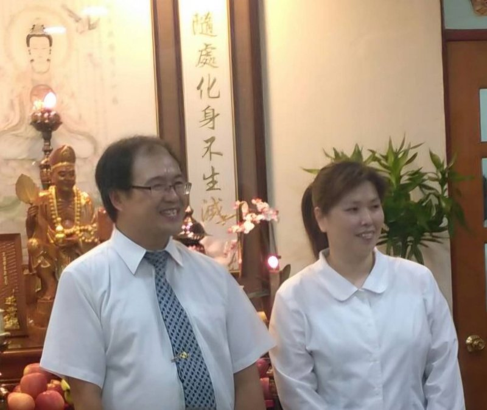

修辦心得 毓德後學:蔡錦玲學習
前言:
感謝天恩師德、感謝白水聖帝、不休息菩薩在天護佑。
後學感到非常榮幸能在發一崇德道場學修講辦行,後學是民國一百年從桃園龍潭佛堂轉至新竹正德佛堂學習,從行德班上課直到講師進修班,在正德佛堂學習那幾年後學是很開心的,李點傳師就像媽媽一樣很慈祥,講師前賢們也很照顧後學,慢慢的後學也融入這個大家庭,由衷感謝道場的栽培及這一路所有成全後學的前賢們。
台灣開放引進外籍移工:
緣起:後學住家鄰近有一處(華夏越南宿舍)裡面有許多越南移工,某天葉講師與我們夫妻提了、朱講師在您們家設個越南班如何?就這樣開啟了這段美好的善因緣,看著相片回憶一幕幕如撥放在眼前,內心充滿感動…從104年開啟了籌備策劃設班的準備,從設計越南DM跑宿舍發傳單、採購教室桌椅、投影機、布幕、黑板、冷氣、筆、筆記本、碗、筷、盤子…。
下班假日出訪透過傳單、成全包、肢體語言、手機翻譯,人說有溝通無障礙,因為這份善愿後學感受到(人有善愿佛助奔)在大家努力下,終於陸續就有越南人回佛堂開光。
感謝天恩師德、仙佛搭幫助道,與正德許多前賢們努力下以及禪德越南講師的協助,在105.9.24我們越南班成班了,感謝中文老師許講師及幾位翻譯講師們的協助,還有正德許多前賢們的護持,越南班每周日晚上皆有供餐,住太遠也有車輛接送,在他們生病時會帶他去看醫生,讓越南這些孩子們感受到佛堂的溫馨,能持續回佛堂學中文及道義,雖然每周都很忙碌、但後學的內心是開心的,也因為這份愛的傳遞,越南道親們也感受到道的尊貴,加上課程很多元(中秋節舉辦巴比Q.知心之旅,宗廟之旅.趣味競賽…)班員們也會帶越南同鄉回佛堂求道,某天有人來按後學家門鈴,一開門看到是騎著腳踏車的越南道親,拿著一袋水果說:講師我拿水果拜仙佛然後給大家吃,讓後學很感動是他剛來台灣沒多久沒什麼錢,但他卻很有心很真誠,也有好幾位越南道親陪後學到處去廣結善緣及來佛堂教我們作家鄉菜,這樣發心的越南道親有好幾位,讓後學覺得好窩心。壇主講師們齊力成全班員開法會,也鼓勵開越南上進班畢班立愿,看到班員發心是大家最開心的事。
因緣使然慢慢越南道親也回到他們的家鄉,每當看著相片內心是感動的,這段美好的善因緣永遠會留在後學心中,她們偶爾也會打電話視訊來關心後學。
道場蓬勃發展各區推動拓壇:
(a) 106年某天傍晚李素鳳點傳師帶領五位講師蒞臨後學家,成全後學是否可以由(家壇轉公壇)點傳師慈悲說:後學夫妻很有心在道場學習,家庭人口簡單,小孩也在學界佛堂學習,最適合成立公壇,因為現在租房子不好找租金又貴,鼓勵後學夫妻家壇轉公壇,就這樣在106.12.30成立毓德佛堂,壇主講師共12位,其實有5位後學完全不認識但前人常言:「不是一家人,不入一家門。」大家因志同道合 齊聚一壇這就是緣份。
(b)本壇有資深講師的帶領及引導,在共辦當中除了有前賢講師引導後學外,後學在
壇主們身上也學到一些新思維及辦道現代化的推動,大家共修共辦齊聚一壇。
毓德成立壇內六組運作(道務、班務、總務、文書、成全、財務) 後學也是第一次學習財務作帳從紙本作業慢慢導入Excel記帳,由家壇轉公壇慢慢的事情也變多,說真的前2年還在調適及學習中…但後來也就慢慢的適應。
(c)毓德每年都會策劃動、靜態的活動,目的皆是接引眾生上法船,從平安齋、烘培、
手作、心靈課程、戶外知心之旅等等過程雖然辛苦,但內心卻是法喜的!
進階規劃毓德(成立三組)每組四位成員目的:人才培長1~12月輪值人學習帶動策
劃、發佈道務獻供訊息、初一十五供果採買、主持壇會ppt準備、安排辦道工作
等等,後學的天敵是拿麥克風及上台,因為這樣的規劃後學告訴自己需要克服障
礙,因為自己尚有許多不足的地方,需要再加強。
(d)原本各公壇只有道務及班務義字班,在2024年3月道場推動各公壇成立(成全義字
班)需指派一位講師擔任並帶動成全,後學認為一個公壇的工作及責任壓力是需要
均分,不能落在幾個人身上因為這樣的想法..後學自願學習帶動本壇成全一職,雖
然有三多的壓力但後學告訴自己一切盡心努力就好,其他就不要想太多…後學尚有
許多不足之處需要再加強學習,感謝道場有這麼好的修辦環境,讓後學輩來學習。
最後:感謝天恩師德、感謝白水聖帝、不休息菩薩在天護佑、感謝道場的栽培
後學學習。
、